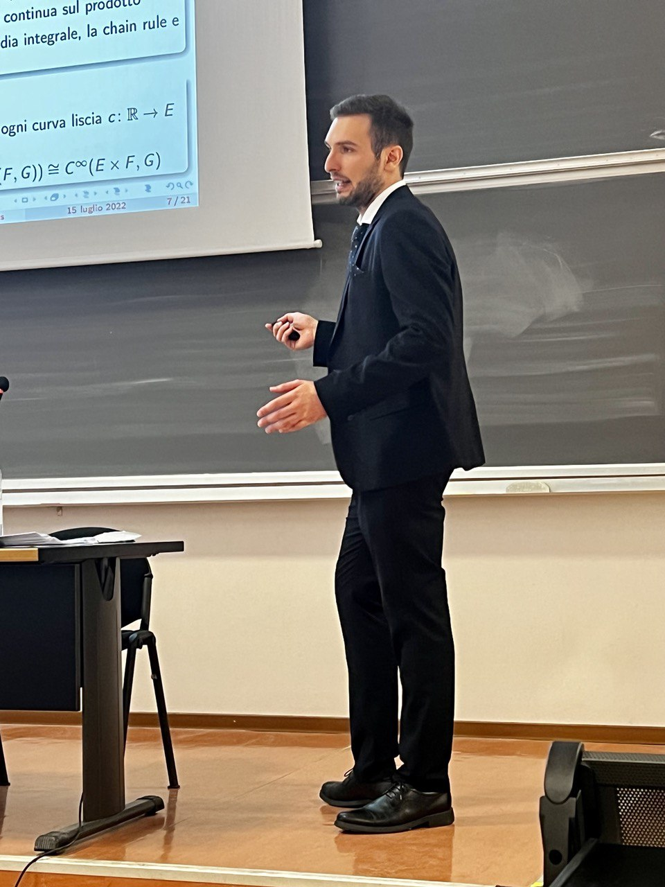
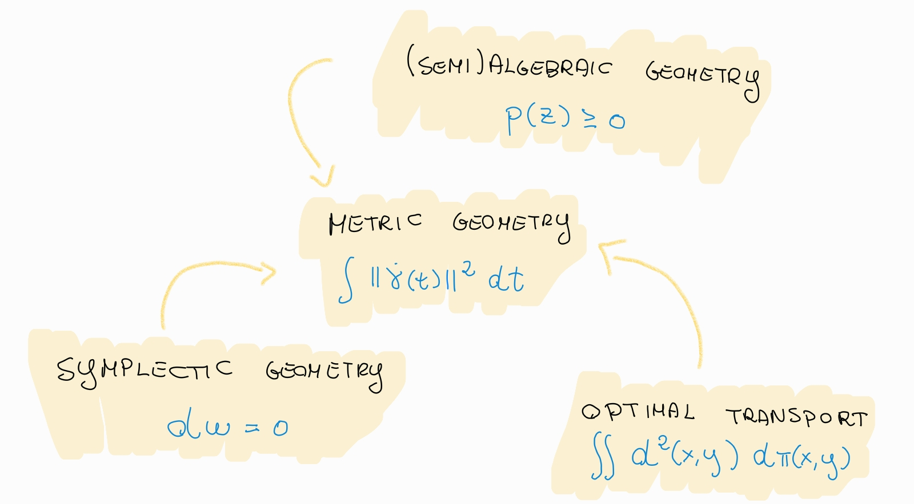
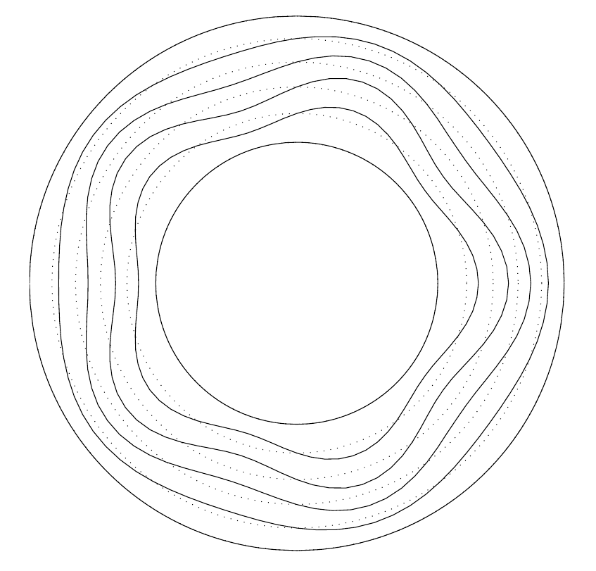
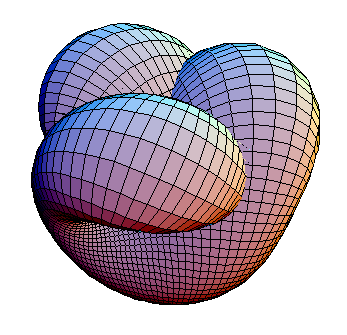

Hello! 😀 I am a 4th year PhD student in Geometry and Mathematical Physics at SISSA. I am currently working on Wasserstein-type distances in algebraic geometry, under the supervision of prof. Antonio Lerario (SISSA) and prof. Fabio Cavalletti (UNIMI). Here you can find my (general purpose) CV.

Other things that I like:

🎓 In my Master's thesis (under prof. Valentino Magnani) I studied Fréchet manifolds and in particular a possible correlation between unbounded sectional curvatures and vanishing Riemannian distances. Fréchet manifolds represent a good compromise between very general (locally convex) and too restrictive (Banach/Hilbert) frameworks, with both abundance of meaningful examples and good (categorical) properties of smooth functions. Here are the slides of my dissertation.

📜 In my Bachelor's thesis (under prof. Riccardo Benedetti) I learnt how Stiefel-Whitney classes provide estimates on the smallest n required to immerse compact manifolds into ℝn; in particular, a uniform lower bound for k-dimensional manifolds is given by the number of 1s in the dyadic expansion of k! (exclamation point, not factorial). Again you can find the slides of my dissertation.
Here is a true story that happened long time ago during a PhD examination at Princeton. Solomon Lefschetz, arguably a top mathematician, was in the committee. At one point the student was asked to prove the Picard-Lefschetz formula. Yes, the same Lefschetz. The student got stuck and had the "audacity" to ask Lefschetz to "unstuck" him. Lefschetz got stuck too. (It is a slick result.) The student passed the exam. [from a Quora answer by Liviu Nicolaescu]